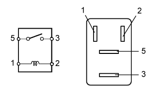
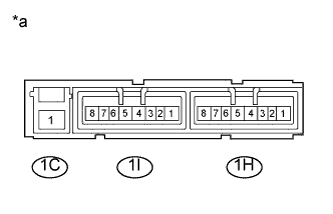

РЕЛЕ (для моделей без DPF) > ПРОВЕРКА БЕЗ СНЯТИЯ С АВТОМОБИЛЯ |
| 1. ПРОВЕРЬТЕ РЕЛЕ СТАРТЕРА (ST) |
 |
Измерьте сопротивление в соответствии со значениями, приведенными в таблице ниже.
| Контакты для подключения диагностического прибора | Состояние | Заданные условия |
| 3 - 5 | Напряжение аккумуляторной батареи не подается на контакты 1 и 2 | 10 кОм или более |
| Напряжение аккумуляторной батареи подается на контакты 1 и 2 | Менее 1 Ом |
| 2. ПРОВЕРЬТЕ РЕЛЕ ВКЛЮЧЕНИЯ СВЕЧЕЙ НАКАЛИВАНИЯ (GLOW) |
|
Измерьте сопротивление в соответствии со значениями, приведенными в таблице ниже.
| Контакты для подключения диагностического прибора | Условие | Заданные условия |
| 3 - 5 | Напряжение аккумуляторной батареи не подается на контакты 1 и 2 | 10 кОм или более |
| Напряжение аккумуляторной батареи подается на контакты 1 и 2 | Менее 1 Ом |
| 3. ПРОВЕРЬТЕ РЕЛЕ ТОПЛИВНОГО НАСОСА (FUEL PMP) |
|  |
Измерьте сопротивление в соответствии со значениями, приведенными в таблице ниже.
| Контакты для подключения диагностического прибора | Условие | Заданные условия |
| 3 - 5 | Напряжение аккумуляторной батареи не подается на контакты 1 и 2 | 10 кОм или более |
| Напряжение аккумуляторной батареи подается на контакты 1 и 2 | Менее 1 Ом |
| 4. ПРОВЕРЬТЕ ИНТЕГРИРОВАННОЕ РЕЛЕ № 1 (IG2) |
Проверьте предохранитель IG2.
Измерьте сопротивление в соответствии со значениями, приведенными в таблице ниже.
| Контакты для подключения диагностического прибора | Условие | Заданные условия |
| Предохранитель IG2 | Всегда | Менее 1 Ом |
Проверьте реле IG2.
|  |
Измерьте сопротивление в соответствии со значениями, приведенными в таблице ниже.
| Контакты для подключения диагностического прибора | Условие | Заданные условия |
| 1C-1 - 1H-4 | Напряжение аккумуляторной батареи не подается на контакты 1H-1 и 1H-3 | 10 кОм или более |
| Напряжение аккумуляторной батареи подается на контакты 1H-1 и 1H-3 | Менее 1 Ом |
| *a | Устройство с неподсоединенным жгутом проводов (интегрированное реле) |
| 5. ПРОВЕРЬТЕ ИНТЕГРИРОВАННОЕ РЕЛЕ № 1 (EFI) |
Проверьте предохранитель EFI.
Измерьте сопротивление в соответствии со значениями, приведенными в таблице ниже.
| Контакты для подключения диагностического прибора | Состояние | Заданные условия |
| Предохранитель EFI | Всегда | Менее 1 Ом |
Проверьте реле EFI.
Измерьте сопротивление в соответствии со значениями, приведенными в таблице ниже.
| Контакты для подключения диагностического прибора | Состояние | Заданные условия |
| 1C-1 - 1I-4 | Напряжение аккумуляторной батареи не подается на контакты 1I-2 и 1I-3 | 10 кОм или более |
| Напряжение аккумуляторной батареи подается на контакты 1I-2 и 1I-3 | Менее 1 Ом |
| *a | Устройство с неподсоединенным жгутом проводов (интегрированное реле) |
| 6. ПРОВЕРЬТЕ ИНТЕГРИРОВАННОЕ РЕЛЕ № 1 (EDU) |
Измерьте сопротивление в соответствии со значениями, приведенными в таблице ниже.
| Контакты для подключения диагностического прибора | Состояние | Заданные условия |
| 1C-1 - 1I-8 | Напряжение аккумуляторной батареи не подается на контакты 1C-1 и 1I-7 | 10 кОм или более |
| Напряжение аккумуляторной батареи подается на контакты 1C-1 и 1I-7 | Менее 1 Ом |
| *a | Устройство с неподсоединенным жгутом проводов (интегрированное реле) |
| 7. ПРОВЕРЬТЕ ГЛАВНЫЙ ЭБУ КУЗОВА (РАСПРЕДЕЛИТЕЛЬНЫЙ БЛОК СО СТОРОНЫ ВОДИТЕЛЯ) |
Проверьте реле ACC.
Измерьте сопротивление в соответствии со значениями, приведенными в таблице ниже.
| *a | Устройство с неподсоединенным жгутом проводов (главный ЭБУ кузова) | - | - |
| Контакты для подключения диагностического прибора | Состояние | Заданные условия |
| 2D-17 - 2K-1 | Напряжение аккумуляторной батареи не подается на контакты 2A-48 и 2D-4 | 10 кОм или более |
| Напряжение аккумуляторной батареи подается на контакты 2A-48 и 2D-4 | Менее 1 Ом |
Проверьте реле IG1 № 1.
Измерьте сопротивление в соответствии со значениями, приведенными в таблице ниже.
| *a | Устройство с неподсоединенным жгутом проводов (главный ЭБУ кузова) | - | - |
| Контакты для подключения диагностического прибора | Состояние | Заданные условия |
| 2A-31 - 2K-1 | Напряжение аккумуляторной батареи не подается на контакты 2A-52 и 2D-4 | 10 кОм или более |
| Напряжение аккумуляторной батареи подается на контакты 2A-52 и 2D-4 | Менее 1 Ом |